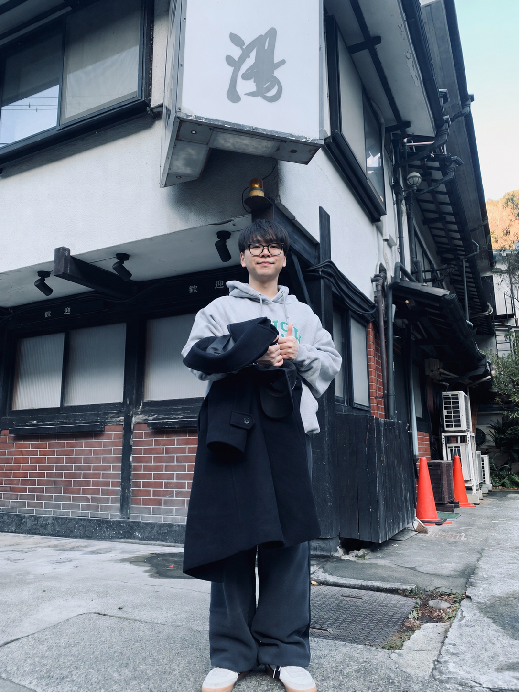

PLAYER INTRODUCTION
HELLO,
I AM 안세영매일의 꾸준함을 성장으로 연결하는 개발자 안세영입니다.
RUN.LEARN.GROW.
START MY QUEST 4-PAGE MULTI PAGE JOURNEY

안세영Developer in progress
LV. 01Explore My Pages
CHOOSE THE NEXT QUEST
각 카드를 선택하면 별도의 HTML 페이지로 이동합니다. 모든 페이지를 방문하면 탐색 퀘스트가 완료됩니다.
⌖NOT VISITED
ABOUT & MY BASE
기본 정보와 충남대학교 오른쪽 궁동 로데오 생활권을 소개합니다.
OPEN ABOUT →♪NOT VISITED
MY THREE RHYTHMS
운동, OTT 보기, 혼코노로 만드는 일상의 세 가지 리듬입니다.
OPEN RHYTHMS →BNOT VISITED
SSAFY QUEST BOARD
삼성 B형, 자격증, 스터디라는 세 가지 목표를 보여줍니다.
OPEN GOALS →SITE QUEST · 0/4 PAGE COMPLETE